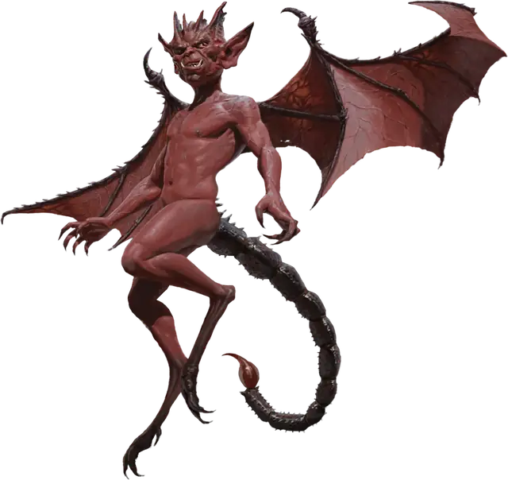

Бес
Imp
Крошечное Исчадие (Дьявол), Принципиальное Злое

Класс Защиты 13 Инициатива +3 (13)
Хиты 21 (6к4 + 6)
Скорость 20 футов, Полёта 40 футов
| мод | спас | ||
|---|---|---|---|
| СИЛ | 6 | −2 | −2 |
| ЛОВ | 17 | +3 | +3 |
| ТЕЛ | 13 | +1 | +1 |
| мод | спас | ||
|---|---|---|---|
| ИНТ | 11 | +0 | +0 |
| МДР | 12 | +1 | +1 |
| ХАР | 14 | +2 | +2 |
Сопротивление урону Холод
Иммунитеты Огонь, Яд; Отравленный
Чувства Тёмное зрение 120 футов (игнорирует магическую Темноту), пассивное Восприятие 11
Языки Общий, Инфернальный
Опасность 1 (200 опыта; БВ +2)
Особенности
Сопротивление магии. Бес совершает с Преимуществом спасброски от заклинаний и прочих магических эффектов.
Действия
Жало. Бросок рукопашной атаки: +5, досягаемость 5 фт. Попадание: 6 (1к6 + 3) Колющего урона + 7 (2к6) урона Ядом.
Невидимость. Бес сотворяет заклинание Невидимость на себя, не нуждаясь в компонентах (заклинательная характеристика — Харизма).
Перевоплощение. Бес перевоплощается, либо принимая облик крысы (Скорость 20 фт.), ворона (Скорость 20 фт., Полёта 60 фт.) или паука (Скорость 20 фт., Лазания 20 фт.), либо возвращаясь к своему истинному облику. Его статистика в каждом облике одинакова, за исключением Скорости. Всё снаряжение, которое он носит или несёт, не превращается.
Бонус мастерства +2
Среда обитания Любая
Сокровища Отсутствуют